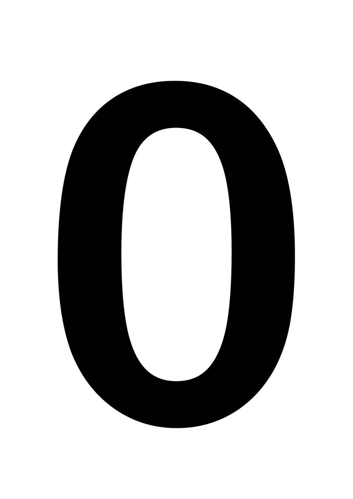
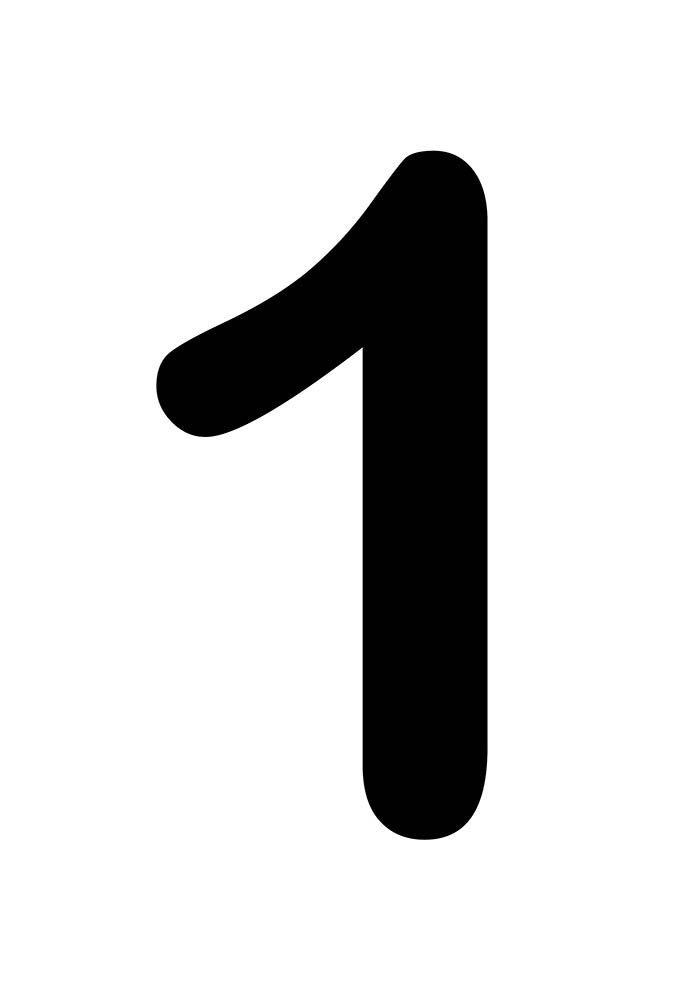
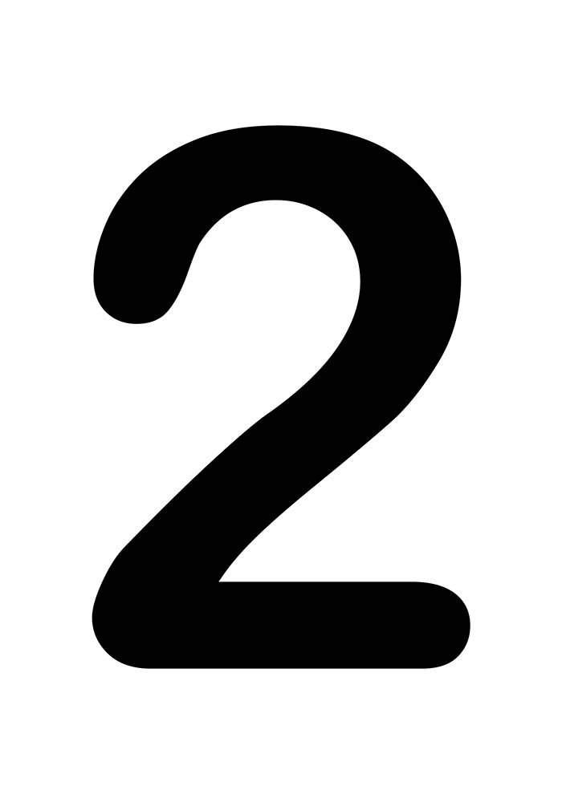
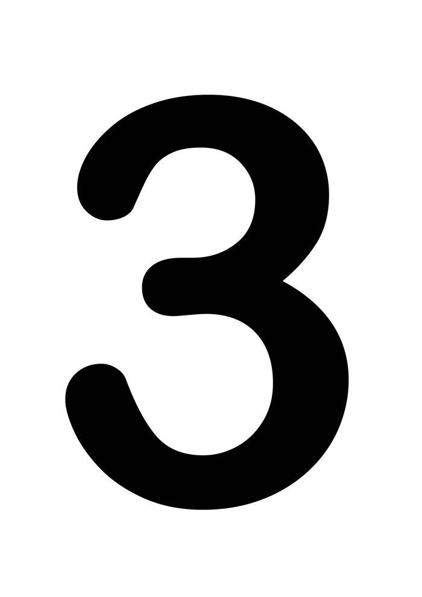
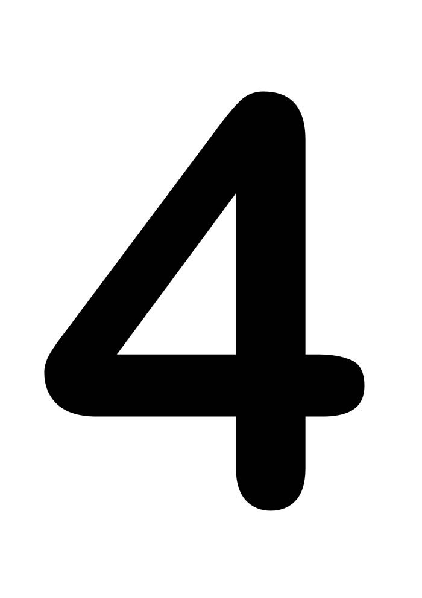
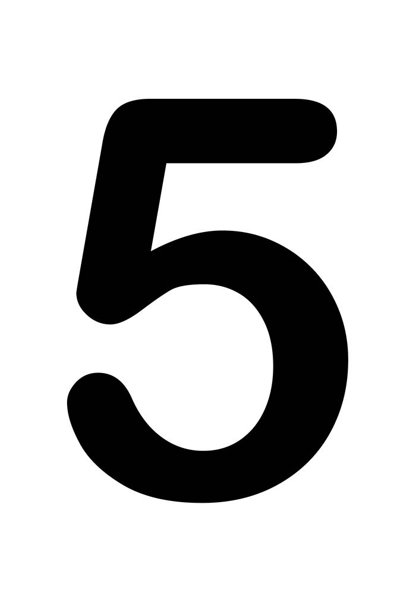
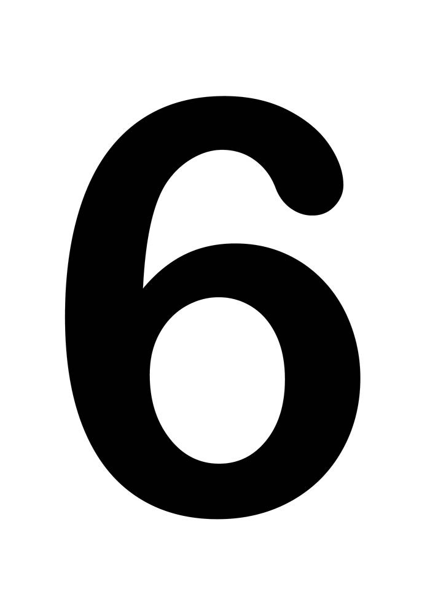
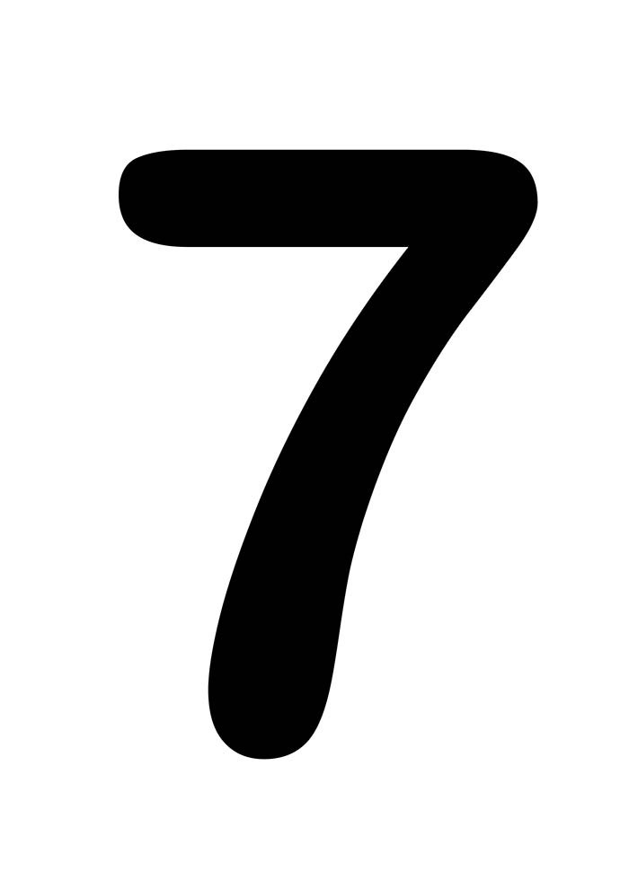

<div wm-slider>
    <p></p>
    <p></p>
    <p></p>
    <p></p>
    <p></p>
    <p></p>
    <p></p>
    <p></p>
</div>
<style>
    p{
        position: absolute;
        display: none    
    }
    img{
        width: 100px;
        height: 200px;
    }
</style>
<script>
    function mover(elem, inicio, fim, passo, callback){
        const novoInicio = inicio - passo;
        if(novoInicio >= fim){
            elem.style.left = novoInicio + "px"
            setTimeout(() => mover(elem, novoInicio, fim, passo, callback), 7)
        } else{
            callback()
        }
    }
    /**
    const p = document.querySelector("[wm-slider] > p")
    p.style.display = "block"
    mover(p, 1500, -400 , 5, ()=>{
        console.log("rodou")
    })
    */
    function slider(){
        const elementos = document.querySelectorAll("[wm-slider] > p")
        const slides = Array.from(elementos)
        exibirSlide(slides, slides[0])

    }
    function exibirSlide(slides, slide){
        slide.style.display = "block"

        const inicio = innerWidth
        const fim = -slide.clientWidth

        slide.style.left = '${inicio}px'

        mover(slide, inicio, fim, 5, ()=>{
            slide.style.display = "none"
            exibirSlide(slides, getProximo(slides, slide))
        })
    }
    function getProximo(lista, atual){
        const i = lista.indexOf(atual) + 1
        return i < lista.length ? lista[i] : lista[0]
    }
    slider()
</script>